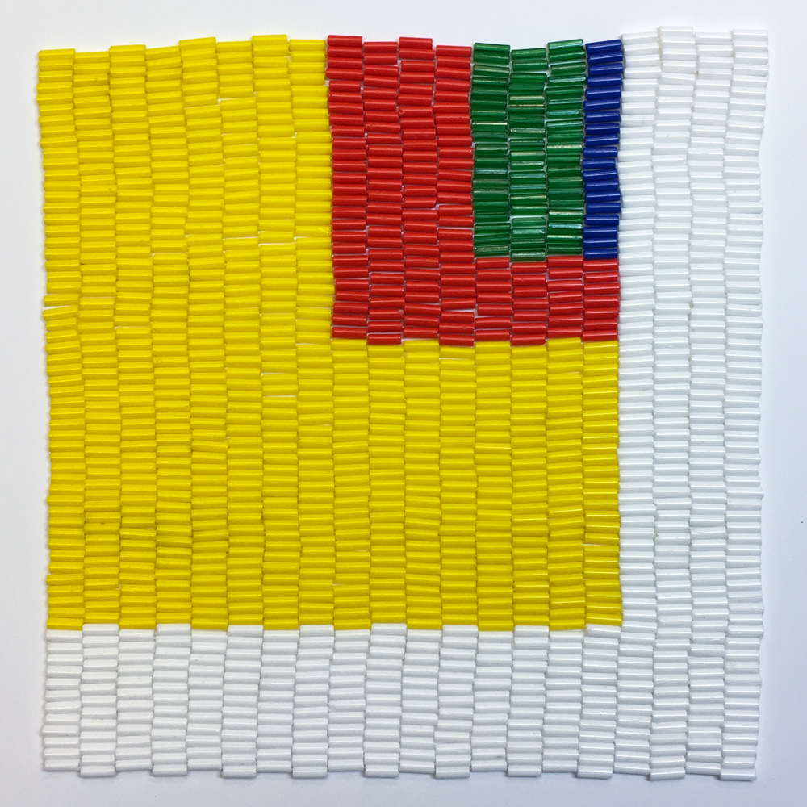

redbud leaves, October 13, 2008
glass beads, thread.
4 x 10in
2014
glass beads, thread.
6 x 6in each
2017
In my recent series, I show the human hand in the analytical realm of information technology. As I have learned to write code for websites, the process has informed my artwork.
digital print, glass beads, thread.
6 x 12in
2017
gouache on bristol board.
17 x 21in
2017
I would change the code and test it to see the rectangles move in relation to one another, sometimes including mnemonic clues in the code that referenced the colors. I began drawing with the shapes, and to my delight, the compositions took on the styles of Mid-20th Century American Abstract painting.
glass beads, thread.
5.5 x 5.5in
2016
I learn best hands-on, and to this objective I began beading works in the same proportions as the patterns on the screen. I became a human emulator of the code, translating pixels into beads.